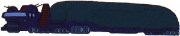

| Samson |
|
|  | |
General and Technical Data |
|
|
Unit Type: cargo truck Operator: Duchy of Zeon Propulsion system: wheels Hangar capacity: 1 infantry Launch catapults: 0 Fixed armaments: 2x 2-barrel AA machinegun turret Technical and Historical Notes A lightly armed and armored transport vehicle, Samsons are used to carry damaged mobile suits to rear lines, as well as to repair, re-arm and refit units in the field. Their armor unable to withstand a persistant assault from enemy mobile suits and their weaponry only useful for anti-infantry and anti-aircraft fire, they are not meant for front lines combat. |
 RPG quick stats sheet
RPG quick stats sheet